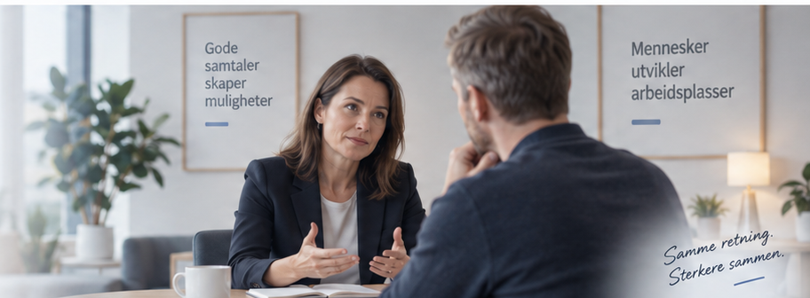

Ikke skriv navn eller andre identifiserende opplysninger.
Beskriv situasjonen anonymt.
Velg tema, beskriv situasjonen anonymt og få støtte til å planlegge en profesjonell og tydelig samtale.

Finn temaet som passer best for din situasjon.
Beskriv situasjonen anonymt.
åpning, spørsmål, mulige reaksjoner og ting å være oppmerksom på.
Beskriv situasjonen kort, så foreslår Samtalestøtte hvilket undertema som passer best.
Velg kortet som ligner mest på situasjonen din.
Svar bare på det som er relevant. Du kan velge flere alternativer når flere passer.
Forslaget er tilpasset det du har skrevet.
Still et oppfølgingsspørsmål om akkurat denne situasjonen.
Velg det temaet som er mest behagelig å bruke.